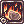
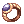
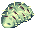
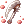
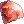
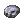
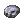
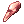

Guia Mecanico PT
Jump to navigation
Jump to search
Apresentações:
Olá, me chamo Mateus, tenho 21 anos e estou jogando no NovaRO ativamente desde Dezembro de 2020. Neste Guia eu irei me referir a mim mesmo como "Matt", pois meus amigos me chamam assim. Você pode entrar em contato comigo In Game: Old Wolf of Farron.
Minha breve história com o Ragnarok:
Como muitos de vocês, eu joguei Ragnarok antes mesmo de existirem as terceiras classes, isto a muito tempo atrás. Após praticamente uma década sem jogar, tentei começar a jogar no servidor brasileiro Thor, quando foi anunciado a vinda do EAC, porém, foi uma decepção completa, então tempos depois, fui introduzido ao NovaRO e foi onde eu me encontrei.
Dúvidas e Respostas:
- Estou começando agora no servidor. Devo começar criando qual classe?
Mecânico.
- Mas eu perguntei para Fulano e Fulano me disse que RK da 800kk de dano sem equipamento nenhum, só com uma Tsurugi e 4 Cartas Mumia.
Faz um Mecânico.
- Ah, mas ouvi dizer que Ranger...
Faz a porra do Mecânico, caralho.
- ...
Confia. (Foto do Will Smith ajeitando a gola.jpg)
Obviamente isso foi tudo brincadeira e nenhuma pergunta foi respondida (ainda). O que me faz questionar se realmente era necessário ter este tópico dentro do guia.
Por que Mecânico deve ser a minha primeira classe?
- Habilidades
- Mercador e suas evoluções possuem habilidades que nos ajudarão a otimizar o nosso Farm. Sendo elas Discount, Overcharge, Enlarge Weight Limit e Push Cart.
Nos possibilita comprar itens de NPCs por um preço menor do que o padrão. Quando maximizada, o desconto chega a 24% em relação ao valor normal do item. Supondo que você queira comprar umaBerserk Potion, que normalmente custa 3.000 Zenys. Caso você possua a Habilidade maximizada, você pagará 2280.
Esta é a Habilidade que faz as evoluções de Mercador serem essenciais para qualquer um. A habilidade maximizada aumenta o valor de venda de seus itens para os NPCs em 24%. Supondo que você queira vender umaMastela, que normalmente o NPC paga 4250 Zenys. Caso você possua a Habilidade maximizada, você receberá 5270. A Habilidade se destaca principalmente em mapas como Geffenia, Magma Dungeon e Thanatos Tower onde você dropa itens para vender diretamente para o NPC. Enquanto outras classes tem que gastar tempo colocando todos os itens no seu Armazém, trocar de personagem, pegar todos os itens e então vender com um Mercador, você, que agora irá jogar de Mecânico, irá apenas voltar para a cidade de sua escolha no final do seu Farm e vender diretamente os itens, sem perda de tempo, assim otimizando o Zeny que você ganha.
Habilidade passiva que aumenta a capacidade de carga de seu personagem em absurdos 2000 pontos. Ao meu ver, essa é a habilidade que faz os Mercadores serem tão superiores quando falamos de otimização de Farm. Quanto mais capacidade de carga, menos vezes temos que voltar na cidade para vender os itens e quanto menos tempo gastamos na cidade, mais tempo gastamos fazendo nosso Zeny.
Permite você ter um carrinho com 200 espaços de armazenamento e 8000 de capacidade de carga. Também possibilita utilizar a habilidadeVending, pois você só poderá criar uma loja e vender itens para outros jogadores utilizando o carrinho e armazenando os itens que deseja vender dentro dele. Esta habilidade é um tópico controverso, ao menos para mim, pois intuitivamente você pode pensar "Nossa, então é como um segundo inventario, isso significa que eu posso ficar o dobro de tempo neste mapa e Farmar muito mais", e isso seria verdade se não fosse necessário que você pare de matar os monstros para transferir item por item para dentro de seu carrinho. Fiz alguns experimentos em que quando meu inventario enchia, eu transferia os itens para o carrinho e continuava Farmando e minha conclusão foi, não vale a pena o tempo que você gasta transferindo os itens para o carrinho, é mais rápido voltar até a cidade, vender os itens no NPC e voltar do que ficar colocando os itens no carrinho e depois tirando para vender no NPC. Mesmo assim, eu utilizo o carrinho, para mim, a utilidade dele tem sido guardar cartas ou itens que não costumam acumular durante o Farm, pois nosso inventário é limitado a 120 espaços, então assim que eu dropo alguma carta ou algo do gênero eu imediatamente transfiro para o carrinho e sigo farmando. Atalho para acessar o inventário do carrinho é Alt + W
- "Mas Matt, então eu vou criar um Bioquímico se todas as evoluções de Mercador tem essas habilidades." De fato, porém eu ainda não apresentei as Habilidades exclusivas de Mecânico que irão nos ajudar a chegar no One Shot. Além do mais, como a ideia é ser o seu primeiro personagem, suponho que você não possua Zenys no servidor, portanto, comprar os equipamentos para um Bioquímico seria praticamente impossível neste momento.
- Habilidades de Ferreiro e Mestre Ferreiro
Contrariando todas as expectativas e a nostalgia de alguns, os Ferreiros ou Mestre Ferreiros não se destacam por Refinar ou Forjar equipamentos, em contra partida, essa classe oferece grandes esteroides de dano, com as Habilidades Weapon Perfection, Over Thrust, Maximize Power, Weaponry Research e Skin Tempering, nos possibilitando investir menos em equipamentos e ainda assim causar danos consideráveis.
Habilidade Ativa que remove completamente a penalidade de dano da sua arma por 50 segundos. Se você estiver em um Grupo, também afeta seus aliados. "O que seria esta penalidade de dano?" Toda a classe de armas possui penalidade de dano baseado no tamanho do mostro em que você está causando dano. No caso dos Mecânicos, que geralmente estarão usando Machados a penalidade seria a seguinte: Total de dano a monstros Pequenos: 50% (Redução de 50% de dano) Total de dano a monstros Médios: 75% (Redução de 25% de dano) Total de dano a monstros Grandes: 100% (Redução de 0% de dano)
Habilidade Ativa que quando maximizada aumenta o seu Ataque total em 25% por 100 segundos. Se você estiver em um Grupo, também afeta seus aliados, porém, aumentando em 15% o Ataque total.
Habilidade Ativa que drena 1 de Mana a cada 5 segundos e remove a sua variação de dano enquanto a mesma estiver ativa. Mantenha sempre esta habilidade ativa. No Ragnarok é existe uma variação de dano, que segue a seguinte formula: ± 0.05 × Nível da Arma × Ataque Básico da Arma

Habilidade Ativa que quando maximizada aumenta o seu Ataque total em 100% por 180 segundos, consome 5.000 Zenys a cada utilização. Apenas esta habilidade sozinha já é capaz de dobrar o seu dano, quando somada às outras habilidades, possibilitará que alcance a quantia necessária para matar grande parte dos monstros em apenas uma habilidade.

Habilidade Passiva que aumenta o seu Ataque total em 20 de dano fixo e sua Precisão em 20.

Habilidade Passiva que aumenta a sua resistência à propriedade Fogo em 25% e a propriedade Neutra em 5%. Cheguei a pensar em não adicionar esta Habilidade no guia, pois não são muitos mapas que a resistência a Fogo será útil, mas mesmo que só adicione 5% de resistência à propriedade Neutra, já é alguma ajuda.
- Habilidades de Mecânico
- Como se não bastasse todo o dano e resistências que os Ferreiros e Mestre Ferreiros proporcionam, os Mecânicos possuem mais Habilidades passivas para aumentar o dano do seu personagem, uma Habilidade de aceleração de movimento e uma Habilidade Ofensiva que não possui tempo de Carregamento, que são Madogear License, Axe Training, Acceleration, Fire Earth Research e Axe Boomerang.

É a Habilidade que faz o Mecânico ser a classe que é. Uma armadura robótica, ou um Mecha, como preferir chamar. Essa Habilidade permite você usar o Mecha e o Mecha permite você usar algumas Habilidades que são exclusivas dele, comoKnuckle Boost e
Arm Cannon e algumas outras. A parte mais importante é que passivamente, esta habilidade lhe concede 75 de dano de Ataque e te torna imune a redução de velocidade.

Habilidade Passiva que aumenta o seu Ataque em 50 e sua Precisão em 30 quando estiver utilizando um Machado ou aumenta o seu Ataque em 40 e sua Precisão em 20 se estiver utilizando uma Maça.
Habilidade Ativa que aumenta consideravelmente a sua Velocidade de Movimento por 120 segundos, porém, consome umMagic Gear Fuel. Para poder utilizar esta habilidade, é necessário ter em seu inventário
Accelerator, que pode ser comprado no Office (@go 50) com o NPC Mado Dealer, este mesmo NPC vende
Discount . Habilidade simplesmente incrível, lhe torna a segunda classe mais rápida do jogo, perdendo apenas para os
Cart Boost dos Bioquímicos.
-  Fire Earth Research:
Habilidade Passiva que aumenta o seu Ataque em 50 contra monstros do tipo Fogo ou Terra e reduz em uma quantia fixa de 50 de dano o dano recebido destas duas propriedades.
Habilidade Ativa e Instantânea de alvo único que causa uma quantia considerável de dano. Essa é a Habilidade que torna tudo possível, e é essa Habilidade que será a sua fonte de Dano durante algum tempo, então aprenda a apreciar os Machados girando em sua tela. A fórmula de dano desta Habilidade leva em consideração o Peso da Arma, então estaremos levando em consideração isto daqui em diante.
Por enquanto, este guia será destinado à Habilidade  Axe Boomerang exclusivamente. Futuramente expandirei o guia para outras Habilidades.
Axe Boomerang exclusivamente. Futuramente expandirei o guia para outras Habilidades.
Guia de Level
- Método iniciante
Este método visa auxiliar aqueles que optarem por Mecânico como seu primeiro personagem, levando isto em consideração, este não será o método mais eficaz ou rápido para alcançar o Level máximo, mas, será um método que tenta tornar possível você alcançar o Level necessário para se tornar um Mecânico já possuindo a quantia de Zeny necessária para comprar os seus Equipamentos. Level 1 ao 10: Você terá duas opções nesta etapa, fazer ou não fazer o Tutorial. Caso seja o primeiro personagem em sua conta você não pode recusar fazer o Tutorial, porém, se você usar o comando @go, você será levado até a cidade escolhida e terá "burlado" o Tutorial, mas, se este for o seu primeiro personagem eu recomendo que o faça (Se você conseguir ler em Inglês). Se optou por pular o tutorial: Antes de sair para Upar, vá até o Main Office (@go 50) e fale com o NPC Job Master, ele irá lhe dar  Ring of Experience [0] que aumentará a experiência recebida até que seu personagem atinja o Level 100. Aumente 10 pontos em STR e 10 em DEX e dirija-se até os arredores de Prontera, pela saída Sul ou Oeste e mate alguns:Poring e
Lunatic e Fabre Volte para o Main Office (@go 50) e fale novamente com o NPC Job Master e evolua para Mercador. Se optou por fazer o tutorial: Durante o Tutorial, você deve seguir as orientações de sua "Mãe" até que você o conclua. Após completar o tutorial, você será recompensado com 5.000 Zenys. Vá até o Main Office (@go 50) e fale com o NPC Job Master, ele irá lhe dar Ring of Experience [0] que aumentará a experiência recebida até que seu personagem atinja o Level 100. Fale com o NPC Job Master novamente e evolua para Mercador. Level 10 ao 26: A partir deste momento, você deverá manter o seu @autoloot ligado a todos os momentos. Aumente 10 pontos em DEX e todo o resto disponivel em STR. Com o comando ligado, pontos distribuidos se dirija até Prontera (@go 0), e vá para a saída à esquerda. Mantenha sempre ativa a Habilidade
Loud Exlamation para aumentar o seu dano. Neste local você deverá matar até que seu Level de Classe seja 16 o monstro: Hornet Drops relevantes:
Bee Sting Chance de Drop: 100% / Valor médio de venda para Jogadores: 1.500 Assim que seu Level de Classe for 16, volte para Prontera. Em Prontera, use o comando @wb Bee Sting, uma janela de compradores deverá aparecer, procure por quem está oferecendo o maior valor, dê um duplo click e a Janela de Venda será aberta, arraste todos os seus
Enlarge Weight Limit e 10 pontos em
Pushcart. Encontre um NPC chamado Universal Rental, que pode ser encontrado em qualquer cidade, ele lhe dará sem custo algum um Carrinho, o que nos possibilitará usar a Habilidade Cart Revolution que será a sua fonte de dano até que você se torne um Mecânico. Passo de Extrema importância: Vá até Prontera (@go 50). Com o Zeny que você adquiriu vendendo seus
Flower(Você não conseguirá comprar todas de uma vez, compre de 2.000 até que totalizem 8.000), abra o inventário do Carrinho usando Alt + w e as coloque dentro de seu Carrinho. Isso ajudará no dano da Habilidade Cart Revolution. O dano da Habilidade Cart Revolution segue a seguinte fórmula: Ataque = [150 + (100 x Peso Atual do Carrinho ÷ Peso Maximo do Carrinho)] Sem peso: Ataque = [150 + (100 x 0 ÷ 8000)]% -> Ataque = [150 + (100 x 0)]% -> Ataque = [150 + 0)]% - > Ataque = 150% Com peso: Ataque = [150 + (100 x 8000 ÷ 8000)]% -> Ataque = [150 + (100 x 1)]% -> Ataque = [150 + 100)]% - > Ataque = 250%
Poison Spore Chance de Drop: 100% / Valor médio de venda para Jogadores: 2.500 Creamy Drops relevantes:
Creamy Card Chance de Drop: 0,10% / Valor médio de venda para Jogadores: 5.500.000 Não esqueça de vender seus
Eden Mace I [0] como recompensa. Level 26 ao 55: Após concluir a missão do Eden, volte para e continue matando Poison Spore até que seu Level de Classe seja 50. Retorne ao Main Office (@go 50), fale com o NPC Job Master e evolua para Ferreiro. Level 55 a 85: Aumente seus status até que você tenha 40 pontos em DEX e então aumente tudo o que puder em STR. Com o dinheiro que você juntou anteriormente, vá até algum NPC Tool Dealer, que pode ser encontrado com um icone de poção logo acima e em qualquer cidade e compre alguns
Grape Juice. Use o comando @ws 12114 e compre dois
Fire Elemental Converter, você irá precisar para ser capaz de matar os monstros em duas conjurações da Habilidade Cart Revolution. Você deve ir até Geffen (@go 2) e ande até . Use o seu
Weapon Perfection,
Over Thrust e
Maximize Power, não as use para economizar Mana. Mate exclusivamente os: Savage Drops relevantes:
Savage Meat Chance de Drop: 2,5% / Valor médio de venda para Jogadores: 100.000 Angled Glasses Chance de Drop: 0,10% / Valor médio de venda para Jogadores: 2.750.000 Venda todos os
- Método preguiçoso:
Para a execução deste método, é necessário que você já tenha uma pequena quantia de Zenys, pois você irá utilizar Scaraba Summoning Scroll. Este pergaminho fará você invocar um: Antler Scaraba Utilize a tecla Alt + Botão Esquerdo do Mouse para controlar o Antler Scaraba, escolhendo o alvo que ele irá atacar e para onde ele deve se mover. Level 1 ao 10: Pule o Tutorial, caso seja o primeiro personagem em sua conta você não pode recusar fazer o Tutorial, porém, se você usar o comando @go, você será levado até a cidade escolhida e terá "burlado" o Tutorial. Antes de sair para Upar, vá até o Main Office (@go 50) e fale com o NPC Job Master, ele irá lhe dar Ring of Experience [0] que aumentará a experiência recebida até que seu personagem atinja o Level 100. Até aqui, você não irá precisar do Scaraba Summoning Scroll. Aumente 10 pontos em STR e 10 em DEX e dirija-se até os arredores de Prontera, pela saída Sul. Mate alguns:Fly Wing e traga seu Scaraba Summoning Scroll. A partir deste ponto, coloque todos os seus pontos de atributo em VIT (Não se preocupe, você irá Resetar os Atributos mais à frente), para evitar que você morra caso chame a atenção de um monstro. Importante: a partir de agora você pode morrer se não tiver cuidado, sempre que você morrer, você terá de usar outro Scaraba Summoning Scroll. Se você atrair a atenção de um monstro e não o seu Antler Scaraba use imediatamente uma
- Continuação:
Level 85 ao 99: Agora a sua missão é encontrar um Grupo que esteja querendo fazer as missões conhecidas como Gramps. Vá até o Grupo Eden (@go eden) e tente encontrar uma janela de chat que esteja escrito "LFM> 85+", o "LFM" significa que estão procurando por membros para o Grupo, e o "85+" se refere ao Level da missão do Gramps (Existem missões do Gramps nos níveis, 85, 115, 145 e 175). Caso você não encontre um Grupo, abra você uma janela de Chat usando Alt + C e convide as pessoas para um Grupo ou então crie uma janela de chat escrito "LFP> 85+" e espere até que algum grupo lhe chame. Antes de você ir até o mapa, é necessário iniciar a Missão, vá até o Grupo Eden (@go eden) e no canto superior esquerdo haverá uma placa com o nome de Monthly Hunts, interaja com a placa e selecione a opção referente ao Level 85 (Você deve iniciar a missão para os dois monstros que irão aparecer em suas opções). Quando você já tiver iniciado as missões e estiver com o seu Grupo formado, espere o Lider do Grupo mandar todos irem até o mapa. Para ir até o mapa, fale com o NPC Gramps que (Que é o motivo da missão se chamar Gramps) está localizado no Grupo Eden ao lado direito da placa Monthly Hunts, fale com o NPC e selecione a opção "Can you warp me?". Ferreiros não são especialmente bons como causadores de dano nos Gramps, mas ainda assim concedem poderosos esteroides de dano para o seus aliados. Seu objetivo aqui será manter sempre ativas as HabilidadesAcceleration você tem a possibilidade de agir como um Mobber, atraindo a atenção dos monstros e os agrupando para que sejam atingidos todos juntos. Tome cuidado para não receber dano demais e ficar Sobre Aquecido. Caso você já tenha um
STR Supplement Equipment [0] e um
DEX Supplement Equipment [1] siga o Status para DPS e você será capaz de matar com apenas um golpe os monstros usando a Habilidade
Build de Axe Boomerang
Recomendo esta Build caso você não possua uma quantidade de Zenys ou este seja o seu primeiro personagem.
- Early Game:
- Status:
Diferente das outras habilidades dos Mecânicos, a
- Equipamentos
- Cabeça Topo:
Rideword Hat [1]: Equipamento indispensável, não somente para o seu Mecânico, mas para todos os seus personagens de Dano Físico. Este chapéu não exige nenhum refino e nos concede: 5% de Chance de converter 8% do Dano causado em Vida 1% de Chance de converter 4% do Dano causado em Mana Este item deve ser a sua prioridade assim que você entrar no servidor. Ele pode ser obtido facilmente através de uma Quest. Para a Quest são necessários:
100 Worn Out Page
200 Bookclip in Memory
2 Book of Billows 2 Book of Mother Earth
1 Book of the Blazing Sun
1 Book of Gust of Wind Todos estes itens são dropados pelo o monstro Rideword no mapa da Torre do Relógio. Caso não saiba como chegar, digite no seu chat /navi c_tower1 e leia as instruções, ou vá até a NPC Warper mais próxima, selecione Dungeons e então Clock Tower
- Cabeça Meio:
- Cabeça Baixo:
- Armadura:
- Arma:
Thanatos Axe [1]: Equipamento Indispensável. Esta arma possui 300 de dano base e pesa 400 e pode ser encantada por {Item List|id=6672|item=Gray Shard|num=75}}, podendo receber a propriedade Sagrada (Encantamento é totalmente opcional e não é prioridade), o que por si só, já seria motivo para usarmos ela, mas ela ainda adiciona uma 6 pontos de Int e 6 pontos de Vit, porém remove 6 pontos de Luk e como se não bastasse, adiciona: Pequena chance de converter 5% do seu dano causado em Vida e Mana. Este item pode ser obtido através da Instância Ghost Palace, onde dropam asGray Shard, são necessários
Step Card: Uma excelente carta, deve ser adquirida após você ter todos os equipamentos essenciais. Ela aumenta o dano da sua Habilidade
- Capa:
Nidhoggur's Shadow Garb [1]: Item situacional, caso você esteja tendo problemas com Mana, opte por usar esta capa. Ela concede 7% de resistência a todos os Elementos e: 1% de chance de converter 1% do dano causado em Mana
Menblatt Card: Carta situacional, caso você esteja tendo problemas para atingir o dano necessário para matar um monstro com apenas uma Habilidade, priorize está carta. Ela concede 1% de Dano à Longa Distância a cada 10 pontos em DEX, o que acaba aumentando o seu dano consideravelmente.
- Botas:
AGI Supplement Equipment [1]: Item opcional. Altamente recomendado como primeira bota para o seu Mecânico, devido ao seu baixissimo preço e conceder 30 de Ataque quando combinado com o
- Acessórios:
Teleport, que é indispensavel para qualquer mapa de Farm. Este acessório pode ser obtido trocando
15 Paradise Coin com a NPC Administrator Emil no Grupo Eden. Caso você não saiba como chegar, digite em seu chat @navi moc_para 110/97. Você pode substituir o Strength Paradise Necklace V [1] por qualquer acessório que possua Slot e com uma
- Mid Game:
- Status:
Ainda seguindo alguns conceitos da Build de Early game, seguiremos dando prioridade à STR, porém, reduziremos um pouco os pontos em DEX e em AGI para tentar maximizar o dano da HabilidadePoison Breath [0]: Status com
Heroic Backpack [1]: STR: 120 STR: 120 AGI: 100 AGI: 90 VIT: 1 VIT: 90 INT: 1 INT: 1 DEX: 120 DEX: 90 LUK: 90 LUK: 100 Caso você não esteja conseguindo acertar a Habilidade nos monstros que está enfrentando, retire alguns pontos de LUK ou AGI e os coloque em DEX.
- Equipamentos
- Cabeça Topo:
Sea Captain Hat [1]: Item opcional. Um ótimo chapeu que mesmo sem nenhum refino já lhe proporciona um aumento de 20% de dano com a Habilidade
Axe Tornado o que o torna muito versátil, podendo ser utilizado em diferentes builds. Este chapéu pode ser facilmente adquirido pela a bagatela de
4 Endeavor Token com o NPC Master of Coin, que está localizado no segundo andar do Main Office (@go 50).
Dark Pinguicula Card: Carta opcional. Carta muito barata e que proporciona mais 10 de Ataque.
- Cabeça Meio:
- Cabeça Baixo:
Giant Snake Skin [1] você recebe uma variedade de bônus baseados na quantidade de pontos investidos em cada status. Bônus de Conjunto Quando equipados simultaneamente
- Armadura:
STR Supplement Equipment [1]: Item indispensável. Continuaremos utilizando este item por conta de seu grande aumento de dano da Habilidade
300 Charleston Component. O item
- Arma:
 Illusion War Axe [2]: Item opcional. Este item é simplesmente um monstro, sendo disparado a opção que mais aumentará o seu dano com a HabilidadeIllusion Shoes [1]. Aumenta em 40 seu Ataque. Se o Refino de cada um Illusion War Axe [2] e
Golden Wrench [2]: Item opcional. Nem de perto tão empolgante quanto a arma anterior, porém uma opção que adiciona uma possível mudança na forma de se jogar com esta build. Este item não pode ser quebrando em combate, aumenta em 5% o seu Ataque e a cada Level de Refino ele aumenta 4 pontos de Ataque, além disso: Se o Refino da
Power Swing. Se o Refino da
- Capa:
Giant Snake Skin [1]: Item opcional. Outro item que traz muita versatilidade, podendo ser usado em multiplos personagens e builds. Também é um item relativamente barato, a menos que você esteja atrás de um com Encantamentos perfeitos. Este item lhe proporciona mais 10 pontos de Defesa Mágica, o que por si só, não é nada impolgante, a peculiaridade deste item são seus 3 possíveis Encantamentos, sendo um Encantamento Especial, Status e Status além de não ter a necessidade de Refino, pois a mesma já recebe um Refino aleatório quando identificada. Idealmente para esta build, você irá querer Special Str,
Str+7 e
- Botas:
Temporal Boots of Strength [1]: Itens situacional. Não é a bota ideal, porém, uma opção caso você esteja utilizando a
Temporal Boots of Dexterity [1]. Faz Conjunto com
Expert Archer 4 que irá aumentar o seu Dano físico à distância em 8% e
Bear's Might que lhe da 5% de chance quando receber um ataque, de se transformar em um Urso por 5 segundos e aumentar seu STR em 200, este encantamento também faz um Combo com o encantamento  Strong. Quando a sua STR for maior ou igual a 120, aumenta mais 50 pontos de Ataque. Ou
- Acessórios:
STR+2 e
King Schmidt's Strong Insignia [1]: Item opcional. Item extremamente forte, concede mais 10% de Ataque. Mas são seus encantamentos que fazem ele ser tão bom, pode ser encantando com 1 Encantamento Especial, 1 Encantamento de Multiplicador e 1 Encantamento de Status. O Encantamento Especial só é relevante caso você esteja utilizando uma Temporal Boots que possua o Encantamento Especial que faça Conjunto. Os encantamentos ideais são Strong,
Expert Archer 5 e
STR+5, caso você não esteja usando uma Temporal Boots, ignore o Encantamento Especial (Strong). Bônus de Conjunto Quando equipados simultaneamente Strong e
Shotgun Buffalo Bandit Card: Carta opcional. Somente esta carta já lhe proporciona mais 7 pontos em AGI e 7 em Precisão. Mas esta carta realmente se destaca quando equipada em Conjunto com
Revolver Buffalo Bandit Card. Use somente em Conjunto Bônus de Conjunto Quando equipados simultaneamente
Creamy Card: Carta situacional. Habilita a Habilidade
Gold Scaraba Card: Carta situacional. Use apenas caso esteja utilizando a
Onde Farmar?
Esta é com toda a certeza a dúvida que eu mais recebo e a resposta infelizmente não é tão simples assim. Quando eu falo de Farm, eu gosto de dividir ele em duas categorias: Farm seguro: É o método que eu utilizo na maior parte do tempo. Chamo de seguro pois nele você não depende de sua sorte e o seu lucro não depende do valor de mercado (Venda para outros jogadores) que varia constantemente. Com este método, você irá atrás de itens com altas taxas de Drop e um alto valor nos NPCs, e venderá os itens que você encontrar para os NPCs, o que significa que você terá o dinheiro no mesmo instante que você parar de Farmar. Contudo, é um método maçante, pois exige um Farm constante. Farm de sorte: É o método mais lucrativo, sem dúvida alguma. Você pode matar um MVP e encontrar uma Carta que vale 25.000.000.000 de Zenys (Mas quantas vezes você já teve uma sorte dessas?), mas, quanto mais raro o item, mais caro e quanto mais caro, menos jogadores tem dinheiro para comprar e quanto menos jogadores para comprar, mais tempo você pode demorar para vender. Existem algumas maneiras de diminuir os riscos deste método, como o Farm de algumas instâncias como a Old Glast Heim, onde você irá tentar encantar uma Temporal Boots, que com os encantamentos certos, é vendida facilmente por 100.000.000+ de Zenys e é bem mais fácil de acontecer. Neste método iremos atrás de Cartas, Itens com baixa chance de Drop, refinar equipamentos ou itens que outros jogadores necessitam, como consumíveis e itens para fabricação de outros itens. Você tem a liberdade para escolher qual método irá utilizar, ou até mesmo intercalar ambos. Escolha de acordo com o o que lhe agrada mais e torna o jogo mais divertido para você. Existem outras formas de se fazer Zenys, porém, elas exigem um conhecimento mais aprofundado do Jogo e do Servidor e podem ser arriscados demais, por estes motivos, não irei inclui-los neste guia
Geffênia:(Farm seguro)
Provavelmente o local mais famoso de Farm, e tem motivos para isto. É um local de facil acesso, onde com pouco investimento é possível se fazer montanhas de Zenys e isso acontece por conta do baixo Level dos monstros (Quando comparado com o Level máximo do servidor), baixa Vida, altas taxas de Drop dos itens e valores altíssimos dos itens para os NPCs.
Build recomendada:
Por se tratar de um mapa onde os monstros ficam espalhados separadamente, que não se é possível agrupar os monstros e devemos usar Teleport constantemente, eu recomendo utilizar a build de Axe Boomerang ou a build de Knuckle Boost.
Monstros Alvo:
Incubus
Drops relevantes:
Mastela Fruit Chance de Drop: 75% / Valor no NPC: 4.250 / Valor no NPC com  Overcharge 5.270
Overcharge 5.270
 Gold Ring [0] Chance de Drop: 25% / Valor no NPC: 15.000 / Valor no NPC com Overcharge 18.600
Gold Ring [0] Chance de Drop: 25% / Valor no NPC: 15.000 / Valor no NPC com Overcharge 18.600
 Diamond Ring [0] Chance de Drop: 7,5% / Valor no NPC: 22.500 / Valor no NPC com Overcharge 27.900
Diamond Ring [0] Chance de Drop: 7,5% / Valor no NPC: 22.500 / Valor no NPC com Overcharge 27.900
 Huuma Swirling Petal [2] Chance de Drop: 5% / Valor no NPC: 50.000 / Valor no NPC com Overcharge 62.000
Valor médio por abate: 11.125 Zenys / Valor médio por abate com Overcharge: 13.795 Zenys
Succubus
Drops relevantes:
Mastela Fruit Chance de Drop: 75% / Valor no NPC: 4.250 / Valor no NPC com Overcharge 5.270
Diamond Ring [0] Chance de Drop: 12,5% / Valor no NPC: 22.500 / Valor no NPC com Overcharge 27.900
Huuma Swirling Petal [2] Chance de Drop: 5% / Valor no NPC: 50.000 / Valor no NPC com Overcharge 62.000
Valor médio por abate: 8.500 Zenys / Valor médio por abate com Overcharge: 10.540 Zenys
Violy
Drops relevantes:
Huuma Swirling Petal [2] Chance de Drop: 5% / Valor no NPC: 50.000 / Valor no NPC com Overcharge 62.000
Valor médio por abate: 11.125 Zenys / Valor médio por abate com Overcharge: 13.795 Zenys
Succubus
Drops relevantes:
Mastela Fruit Chance de Drop: 75% / Valor no NPC: 4.250 / Valor no NPC com Overcharge 5.270
Diamond Ring [0] Chance de Drop: 12,5% / Valor no NPC: 22.500 / Valor no NPC com Overcharge 27.900
Huuma Swirling Petal [2] Chance de Drop: 5% / Valor no NPC: 50.000 / Valor no NPC com Overcharge 62.000
Valor médio por abate: 8.500 Zenys / Valor médio por abate com Overcharge: 10.540 Zenys
Violy
Drops relevantes:
 Royal Jelly Chance de Drop: 100% / Valor no NPC: 3.500 / Valor no NPC com Overcharge 4.340
Royal Jelly Chance de Drop: 100% / Valor no NPC: 3.500 / Valor no NPC com Overcharge 4.340
 Crimson Violin [2] Chance de Drop: 5% / Valor no NPC: 35.000 / Valor no NPC com Overcharge 43.400
Valor médio por abate: 5.250 Zenys / Valor médio por abate com Overcharge: 6.510 Zenys
Mapas:
Gefenia01: Evite ao máximo farmar neste mapa, nele há uma quantidade pequena dos monstros alvo. Neste mapa nascem 10 Incubus, 10 Succubus e 30 Violy.
Gefenia02: Uma alternativa caso tenham muitos jogadores em Gefenia03. Neste mapa nascem 10 Incubus, 20 Succubus e 40 Violy.
Gefenia03: O melhor mapa para farmar em Gefenia, pois nele nascem 20 Incubus, 10 Succubus e 40 Violy.
Autoloot:
Minha recomendação de autoloot para Geffênia é: @alootid +522|+2621|+2610|+2613|+13313|+526|+1939|+12373|+12370|+4218|+4269 (Fonte: https://www.novaragnarok.com/wiki/Farming_Gefenia com pequenas edições minhas.)
Método:
Neste Mapa você deve priorizar matar os mostros seguindo a seguinte ordem: Incubus > Succubus > Violy. Ignore todos os monstros que não foram citados até o momento, não perca tempo com eles. Evite ao máximo andar por este mapa, os Mini Demon causam um dano consideravel, além de contribuirem para o Super Aquecimento do seu Meca, então, sempre que não houver nenhum Incubus, Succubus ou Violy na sua tela, utilize Teleport até encontrar um destes monstros, repita isto até seu inventário estiver com a capacidade no limite ou até você ficar com 90% da sua capacidade total de peso, então volte para a cidade.
Dica: Aqui você pode ser afetado por Confusão e Maldição, para se livrar facilmente deste problema, use uma Royal Jelly.
Algumas informações utilizadas tem como fonte: https://www.novaragnarok.com/forum/topic/11139-farming-analysis/
Crimson Violin [2] Chance de Drop: 5% / Valor no NPC: 35.000 / Valor no NPC com Overcharge 43.400
Valor médio por abate: 5.250 Zenys / Valor médio por abate com Overcharge: 6.510 Zenys
Mapas:
Gefenia01: Evite ao máximo farmar neste mapa, nele há uma quantidade pequena dos monstros alvo. Neste mapa nascem 10 Incubus, 10 Succubus e 30 Violy.
Gefenia02: Uma alternativa caso tenham muitos jogadores em Gefenia03. Neste mapa nascem 10 Incubus, 20 Succubus e 40 Violy.
Gefenia03: O melhor mapa para farmar em Gefenia, pois nele nascem 20 Incubus, 10 Succubus e 40 Violy.
Autoloot:
Minha recomendação de autoloot para Geffênia é: @alootid +522|+2621|+2610|+2613|+13313|+526|+1939|+12373|+12370|+4218|+4269 (Fonte: https://www.novaragnarok.com/wiki/Farming_Gefenia com pequenas edições minhas.)
Método:
Neste Mapa você deve priorizar matar os mostros seguindo a seguinte ordem: Incubus > Succubus > Violy. Ignore todos os monstros que não foram citados até o momento, não perca tempo com eles. Evite ao máximo andar por este mapa, os Mini Demon causam um dano consideravel, além de contribuirem para o Super Aquecimento do seu Meca, então, sempre que não houver nenhum Incubus, Succubus ou Violy na sua tela, utilize Teleport até encontrar um destes monstros, repita isto até seu inventário estiver com a capacidade no limite ou até você ficar com 90% da sua capacidade total de peso, então volte para a cidade.
Dica: Aqui você pode ser afetado por Confusão e Maldição, para se livrar facilmente deste problema, use uma Royal Jelly.
Algumas informações utilizadas tem como fonte: https://www.novaragnarok.com/forum/topic/11139-farming-analysis/
Sleepers de Yuno:(Farm seguro)
Uma provavel supresa para muitos, já que este mapa é praticamente desconhecido. Este mapa é mais recomendado caso você esteja começando agora no servidor e queira farmar antes mesmo de se tornar uma terceira classe. Os monstros que habitam este mapa não possuem grandes quantidades de Vida e são facilmente mortos por praticamente qualquer classe.
Monstros Alvo:
Sleeper
Drops relevantes:
Grit Chance de Drop: 100% / Valor no NPC: 114 / Valor no NPC com Overcharge 142
Sand Clump Chance de Drop: 100% / Valor no NPC: 264 / Valor no NPC com Overcharge 328
 Great Nature Chance de Drop: 100% / Valor no NPC: 1.500 / Valor no NPC com Overcharge 1.860
Great Nature Chance de Drop: 100% / Valor no NPC: 1.500 / Valor no NPC com Overcharge 1.860
 Crimson Dagger Chance de Drop: 5% / Valor no NPC: 35.000 / Valor no NPC com Overcharge 43.400
Valor médio por abate: 3.628 Zenys / Valor médio por abate com Overcharge: 4.498 Zenys
Ou (Caso você siga o metodo que será citado logo abaixo)
Valor médio por abate: 6.128 Zenys / Valor médio por abate com Overcharge: 7.598 Zenys
Mapa:
Yuno_fild02: Um mapa praticamente indisputado onde habitam 130 Sleeper.
Autoloot:
Neste mapa também são Dropados  Rough Elunium, mas por conta de que cada unidade pesa 20 de nossa capacidade, eu não o inclui na minha recomendação de autoloot. Recomendo para este mapa: @alootid +1056|+7124|+997|+28705|+4228
Método:
Ande pelo o mapa, os Sleeper podem usar a Habilidade
Crimson Dagger Chance de Drop: 5% / Valor no NPC: 35.000 / Valor no NPC com Overcharge 43.400
Valor médio por abate: 3.628 Zenys / Valor médio por abate com Overcharge: 4.498 Zenys
Ou (Caso você siga o metodo que será citado logo abaixo)
Valor médio por abate: 6.128 Zenys / Valor médio por abate com Overcharge: 7.598 Zenys
Mapa:
Yuno_fild02: Um mapa praticamente indisputado onde habitam 130 Sleeper.
Autoloot:
Neste mapa também são Dropados  Rough Elunium, mas por conta de que cada unidade pesa 20 de nossa capacidade, eu não o inclui na minha recomendação de autoloot. Recomendo para este mapa: @alootid +1056|+7124|+997|+28705|+4228
Método:
Ande pelo o mapa, os Sleeper podem usar a Habilidade  Cloaking, então você pode até não estar vendo eles, mas como são monstros agressivos, eles irão até você e se revelarão, tente evitar as Harpy. Use algumas Fly Wing para encontrar mais monstros.
(Este mapa possui uma peculiaridade, onde você conseguirá aumentar significantemente o seu lucro, todavia, é um passo opcional.)
Através da Missão Pedras da Xamã (https://browiki.org/wiki/Pedras_da_Xam%C3%A3) ou utilizando a Habilidade dos Professores Nivel 1
Cloaking, então você pode até não estar vendo eles, mas como são monstros agressivos, eles irão até você e se revelarão, tente evitar as Harpy. Use algumas Fly Wing para encontrar mais monstros.
(Este mapa possui uma peculiaridade, onde você conseguirá aumentar significantemente o seu lucro, todavia, é um passo opcional.)
Através da Missão Pedras da Xamã (https://browiki.org/wiki/Pedras_da_Xam%C3%A3) ou utilizando a Habilidade dos Professores Nivel 1  4 Elemental Analysis você pode transformar Great Nature em
4 Elemental Analysis você pode transformar Great Nature em  Green Live.
Pedras da Xamã: 1 Great Nature = 6 ~ 10 Green Live
4 Elemental Analysis: 1 Great Nature = 5 Green Live
Média: 8 Great Nature Valor no NPC: 500 * 8 = 4.000 / Valor no NPC com Overcharge 620 * 8 = 4.960
Green Live.
Pedras da Xamã: 1 Great Nature = 6 ~ 10 Green Live
4 Elemental Analysis: 1 Great Nature = 5 Green Live
Média: 8 Great Nature Valor no NPC: 500 * 8 = 4.000 / Valor no NPC com Overcharge 620 * 8 = 4.960
Campos de Manuk:(Farm de sorte)
Mapa relativamente conhecido, porém, pouco movimentado. Seus Drops tem um alto valor de mercado e uma alta procura. Este é um dos mapas que tem o potêncial para bater de frente com a tão conhecida Geffenia ou até mesmo superar em alguns casos. É bom lembrar que parte dos Drops serão vendidos diretamente à jogadores, e que quanto mais pessoas vendendo estes itens, mais eles tendem à desvalorizar, então é importante sempre verificar os valores de mercado antes de começar a farmar aqui, caso você veja que há pouca oferta dos itens que aqui Dropam, pode farmar aqui sem dó pois seu lucro será ainda maior.
Build recomendada:
Recomendo a build de Axe Boomerang ou a build de Knuckle Boost, os monstros tendem a ficarem espalhados e não é possível agrupa-los em grandes quantidades.
Monstros Alvo:
Hillslion
Drops relevantes:
Fur Chance de Drop: 100% / Valor no NPC: 352 / Valor no NPC com Overcharge 436 / Sem valor de mercado
 Brigan Chance de Drop: 100% / Valor no NPC: 373 / Valor no NPC com Overcharge 463 / Sem valor de mercado
 Light Granule Chance de Drop: 60% / Valor no NPC: 750 / Valor no NPC com Overcharge 930 / Valor de mercado: 2.000
Horn of Hillslion Chance de Drop: 100% / Valor no NPC: 250 / Valor no NPC com Overcharge 310 / Valor de mercado: 12.000
Valor médio por abate: 1.052 Zenys / Valor médio por abate com Overcharge: 1.767 Zenys / Valor médio por abate no mercado: 14.863 Zenys
Ou (Caso você siga o método que será citado logo abaixo)
Valor médio por abate: 1.052 Zenys / Valor médio por abate com Overcharge: 1.767 Zenys / Valor médio por abate no mercado: 16.196
Monstros Alvo:
Tatacho
Drops relevantes:
Fur Chance de Drop: 100% / Valor no NPC: 352 / Valor no NPC com Overcharge 436 / Sem valor de mercado
Light Granule Chance de Drop: 60% / Valor no NPC: 750 / Valor no NPC com Overcharge 930 / Valor de mercado: 2.000
Horn of Hillslion Chance de Drop: 100% / Valor no NPC: 250 / Valor no NPC com Overcharge 310 / Valor de mercado: 12.000
Valor médio por abate: 1.052 Zenys / Valor médio por abate com Overcharge: 1.767 Zenys / Valor médio por abate no mercado: 14.863 Zenys
Ou (Caso você siga o método que será citado logo abaixo)
Valor médio por abate: 1.052 Zenys / Valor médio por abate com Overcharge: 1.767 Zenys / Valor médio por abate no mercado: 16.196
Monstros Alvo:
Tatacho
Drops relevantes:
Fur Chance de Drop: 100% / Valor no NPC: 352 / Valor no NPC com Overcharge 436 / Sem valor de mercado
 Witch Starsand Chance de Drop: 100% / Valor no NPC: 242 / Valor no NPC com Overcharge 300 / Valor de mercado: 500
Peaked Hat Chance de Drop: 100% / Valor no NPC: 216 / Valor no NPC com Overcharge 268 / Valor de mercado: 9.000
Valor médio por abate: 810 Zenys / Valor médio por abate com Overcharge: 1.004 Zenys / Valor médio por abate no mercado: 10.100 Zenys
Ou (Caso você siga o método que será citado logo abaixo)
Valor médio por abate: 810 Zenys / Valor médio por abate com Overcharge: 1.004 Zenys / Valor médio por abate no mercado: 11.100
Mapas:
Man_fild03: Mapa não muito grande e com pouca concorrência, onde habitam 25Hillslion e 25Tatacho.
Autoloot:
Minha recomendação de autoloot para Manuk é: @alootid +6032|+7938|+6020|+7054|+6021|+6020|+1061
Método:
Use constantemente Fly Wing ou Teleport para encontrar os monstros, eventualmente ande um pouco, principalmente próximo às bordas do mapa para encontrar algum ponto onde os monstros acabaram se aglomerando.
(Este mapa possui uma peculiaridade, onde você conseguirá aumentar significantemente o seu lucro, todavia, é um passo opcional.)
Ao invez de vender os itens para criação, você pode criar o item final e vende-lo um pouco mais caro para os jogadores.
Para que você possa criar conversores elementais, fale com o NPC Master of Element no Main Office (@go 50), compre alguns
Witch Starsand Chance de Drop: 100% / Valor no NPC: 242 / Valor no NPC com Overcharge 300 / Valor de mercado: 500
Peaked Hat Chance de Drop: 100% / Valor no NPC: 216 / Valor no NPC com Overcharge 268 / Valor de mercado: 9.000
Valor médio por abate: 810 Zenys / Valor médio por abate com Overcharge: 1.004 Zenys / Valor médio por abate no mercado: 10.100 Zenys
Ou (Caso você siga o método que será citado logo abaixo)
Valor médio por abate: 810 Zenys / Valor médio por abate com Overcharge: 1.004 Zenys / Valor médio por abate no mercado: 11.100
Mapas:
Man_fild03: Mapa não muito grande e com pouca concorrência, onde habitam 25Hillslion e 25Tatacho.
Autoloot:
Minha recomendação de autoloot para Manuk é: @alootid +6032|+7938|+6020|+7054|+6021|+6020|+1061
Método:
Use constantemente Fly Wing ou Teleport para encontrar os monstros, eventualmente ande um pouco, principalmente próximo às bordas do mapa para encontrar algum ponto onde os monstros acabaram se aglomerando.
(Este mapa possui uma peculiaridade, onde você conseguirá aumentar significantemente o seu lucro, todavia, é um passo opcional.)
Ao invez de vender os itens para criação, você pode criar o item final e vende-lo um pouco mais caro para os jogadores.
Para que você possa criar conversores elementais, fale com o NPC Master of Element no Main Office (@go 50), compre alguns  Blank Scroll que custam 3.040 Zenys cada, escolha a opção para criar Conversores Elementais com a receita antiga e escolha o Elemento Sagrado (Holy).
Blank Scroll que custam 3.040 Zenys cada, escolha a opção para criar Conversores Elementais com a receita antiga e escolha o Elemento Sagrado (Holy).
 Holy Elemental Converter = 3 Horn of Hillslion + 1 Blank Scroll.
Para que você possa criar
Holy Elemental Converter = 3 Horn of Hillslion + 1 Blank Scroll.
Para que você possa criar  Arunafeltz Desert Sandwich, você deve realizar a Missão Tripatriate Union's Feud https://irowiki.org/wiki/Tripatriate_Union%27s_Feud.
Arunafeltz Desert Sandwich = 2 Peaked Hat
Arunafeltz Desert Sandwich, você deve realizar a Missão Tripatriate Union's Feud https://irowiki.org/wiki/Tripatriate_Union%27s_Feud.
Arunafeltz Desert Sandwich = 2 Peaked Hat
Calabouço de Gonryun:(Farm de sorte)
Um mapa grande, pouco disputado, com monstros de Level baixo e pouca quantidade de vida, sendo assim, é possível farmar aqui desde muito cedo, antes mesmo se completar a build de Early Game. E o melhor de tudo, é que seus Drops possuem um valor de mercado muito elevado. Outro mapa com potêncial para bater de frente com Geffênia.
Build recomendada:
Neste mapa também irei recomendar as builds de Axe Boomerang e Knuckle Boost.
Monstros Alvo:
Evil Nymph
Drops relevantes:
Transparent Celestial Robe Chance de Drop: 100% / Valor no NPC: 325 / Valor no NPC com Overcharge 403 / Sem valor de mercado
Crimson Violin=2 Chance de Drop: 5% / Valor no NPC: 35.000 / Valor no NPC com Overcharge 43.400 / Sem valor de mercado
 Crimson Wire=2 Chance de Drop: 5% / Valor no NPC: 35.000 / Valor no NPC com Overcharge 43.400 / Sem valor de mercado
Crimson Wire=2 Chance de Drop: 5% / Valor no NPC: 35.000 / Valor no NPC com Overcharge 43.400 / Sem valor de mercado
 Soft Silk Chance de Drop: 100% / Valor no NPC: 600 / Valor no NPC com Overcharge 744 / Valor de mercado: 4.000
Soft Silk Chance de Drop: 100% / Valor no NPC: 600 / Valor no NPC com Overcharge 744 / Valor de mercado: 4.000
 Level 5 Heal Chance de Drop: 10% / Valor no NPC: 1.000 / Valor no NPC com Overcharge 1.240 / Valor de mercado: 70.000
Valor médio por abate: 4.525 Zenys / Valor médio por abate com Overcharge: 5.611 Zenys / Valor médio por abate no mercado: 13.743 Zenys
Ou (Caso você siga o método que será citado logo abaixo)
Valor médio por abate: 4.525 Zenys / Valor médio por abate com Overcharge: 5.611 Zenys / Valor médio por abate no mercado: 19.243
Mapas:
Gon_dun03: Mapa amplo e sem outros jogadores, onde nascem 50 Evil Nymph.
Autoloot:
Minha recomendação de autoloot para Gonryun é: @alootid +7165|+7166|+1939|+1995|+12002
Método:
Mate todas as Evil Nymph em sua tela e então use Fly Wing ou Teleport para se posicionar no mapa. Caso comece a sentir que você está encontrando poucos monstros, comece a andar perto das bordas do mapa e elimine todas as Evil Nymph que encontrar e então volte a teleportar.
(Este mapa possui uma peculiaridade, onde você conseguirá aumentar significantemente o seu lucro, todavia, é um passo opcional.)
Caso você tenha um personagem da classe Genético, usando a Habilidade
Level 5 Heal Chance de Drop: 10% / Valor no NPC: 1.000 / Valor no NPC com Overcharge 1.240 / Valor de mercado: 70.000
Valor médio por abate: 4.525 Zenys / Valor médio por abate com Overcharge: 5.611 Zenys / Valor médio por abate no mercado: 13.743 Zenys
Ou (Caso você siga o método que será citado logo abaixo)
Valor médio por abate: 4.525 Zenys / Valor médio por abate com Overcharge: 5.611 Zenys / Valor médio por abate no mercado: 19.243
Mapas:
Gon_dun03: Mapa amplo e sem outros jogadores, onde nascem 50 Evil Nymph.
Autoloot:
Minha recomendação de autoloot para Gonryun é: @alootid +7165|+7166|+1939|+1995|+12002
Método:
Mate todas as Evil Nymph em sua tela e então use Fly Wing ou Teleport para se posicionar no mapa. Caso comece a sentir que você está encontrando poucos monstros, comece a andar perto das bordas do mapa e elimine todas as Evil Nymph que encontrar e então volte a teleportar.
(Este mapa possui uma peculiaridade, onde você conseguirá aumentar significantemente o seu lucro, todavia, é um passo opcional.)
Caso você tenha um personagem da classe Genético, usando a Habilidade  Change Material você pode transformar Soft Silk em
Change Material você pode transformar Soft Silk em  Fabric e se você quiser aumentar ainda mais o seu lucro, usando a Habilidade
Fabric e se você quiser aumentar ainda mais o seu lucro, usando a Habilidade  Pharmacy você pode transformar Fabric com mais alguns itens em
Pharmacy você pode transformar Fabric com mais alguns itens em  Bottle Grenade.
Change Material: 2 Soft Silk = 5 Fabric
Pharmacy: 1 Fabric + 1
Bottle Grenade.
Change Material: 2 Soft Silk = 5 Fabric
Pharmacy: 1 Fabric + 1  Alcohol + 1
Alcohol + 1  Empty Bottle + 1
Empty Bottle + 1  Medicine Bowl = Bottle Grenade
Medicine Bowl = Bottle Grenade
Como Otimizar meu Farm?
Antes de mais nada, o que seria "Otimizar o Farm?". É basicamente, maximizar a eficiencia com que conseguimos dinheiro na menor quantidade de tempo possivel. E como fazemos isso? Seguindo alguns conceitos simples. Já ouviram a expressão "Tempo é dinheiro"? Bom, quando se trata de Farmar faz total sentido, já que a cada segundo que nós passamos sem matar um monstro, é um segundo a menos que deixamos de ganhar nossos Zenys, e quando você ganha quantias altas de Zenys, como em Geffenia, que o valor médio de um Incubus é de cerca de 11.125 (Fonte: https://www.novaragnarok.com/forum/topic/11139-farming-analysis/)a cada segundo que passamos fora do mapa ou sem matar monstros, representa uma quantia enorme que deixamos de ganhar.
- Ninguém gosta de Farmar de forma mecânica (Sem ironias com o nome da Classe) e no mesmo mapa por repetidas vezes. Eu mesmo não gosto de Farmar em Geffenia, mas no momento é o metodo que mais me traz Zenys, então eu tento ao maximo conseguir fazer a maior quantia de Zenys possível, no menor espaço de tempo possível, para poder equipar o meu personagem principal.
- Minimizando Gastos:
Se você seguir a lista de equipamentos à risca, você provavelmente não terá de se preocupar com esta parte. Os equipamentos foram pensados para Maximizar a sobrevivência do personagem e não depender de nenhuma poção durante o Farm. Caso você não tenha todos os equipamentos, racione ao maximo suas poções, e não tente Farmar em mapas que lhe causam muito dano. Compre um Pet Incubus, quando o Incubus estiver com a Lealdade em Loyal, você receberá uma 3% de chance de converter 1% do dano causado em Mana. Sempre que for necessário comprar Poções, Comida para Pet ou
- Comandos:
- Para nos auxiliar, existem alguns comando que otimizam o nosso tempo. Sendo eles:
@autoloot: Faz com que peguemos automaticamente todos os itens derrubados pelos monstros. Porém, não será em todos os mapas que nós iremos querer todos os Itens derrubados. @alootid: Por isso existe este comando, com ele podemos filtrar os itens pelos seus IDs. @savealoot: Para otimizar ainda mais, e evitar de todos os dias ou toda a vez que você logar você ter de digitar todos os IDs, você irá colar o comando acima e então usar o @savealoot para que ele fique salvo automaticamente. @loadaloot: Toda a vez que você for farmar, utilize este comando para carregar a lista de IDs salva anteriormente. @go: Um comando de extrema importancia, lhe teletransporta para a cidade desejada, como @go Prontera. Aconselho a utilizar o Alt + M, substitua o atalho de Alt + a tecla que preferir, para facilitar a sua volta para a cidade sempre que você ficar com o inventario lotado. @restock: Após ter sido salva uma configuração de itens em seu inventário, para reabastecer rapidamente, abra o seu Storage e em seu chat escreva @restock. @restock snapshot: Salva os itens e as suas respectivas quantidades que estão em seu inventario no momento do comando e adiciona à sua lista de reestoque. Como você estará utilizando Mecânico, você irá precisar sempre ter uma quantidade de